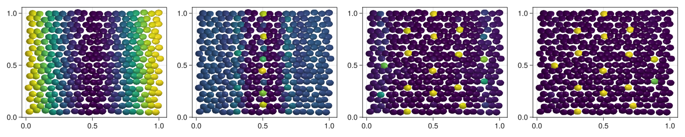

Patterning
In this model we implement the paper from Corson et al. (2017).
using CellBasedModels
using GLMakie #Can be changes to CairoMakie
using Distributions
Makie.inline!(true)trueCreate model
First we define some functions that we will use for then model
fσ(x) = (1+tanh(2*x))/2
fs0(x,t,l,S0,τg,L) = S0*fσ(1-t/τg)*(exp(-x^2/(2*L^2))+exp(-(1-x)^2/(2*L^2))) + fσ(t/τg-1)*(exp(-x^2/(2*l^2))+exp(-(1-x)^2/(2*l^2)))fs0 (generic function with 1 method)We create the ABM model.
model = ABM(2,
agent = Dict(
:s0 => Float64,
:u => Float64,
:s => Float64
),
model = Dict(
:a0=>Float64,
:a1=>Float64,
:τ=>Float64,
:l=>Float64,
:D=>Float64,
:S0=>Float64,
:τg=>Float64,
:L=>Float64
),
agentODE = quote
s0 = fs0(x,t,l,S0,τg,L)
s = 0
@loopOverNeighbors i2 begin
d = minimum(
[
(x-x[i2])^2+(y-y[i2])^2,
(x-x[i2]+1)^2+(y-y[i2])^2,
(x-x[i2]-1)^2+(y-y[i2])^2,
(x-x[i2])^2+(y-y[i2]+1)^2,
(x-x[i2])^2+(y-y[i2]-1)^2,
(x-x[i2]+1)^2+(y-y[i2]+1)^2,
(x-x[i2]+1)^2+(y-y[i2]-1)^2,
(x-x[i2]-1)^2+(y-y[i2]+1)^2,
(x-x[i2]-1)^2+(y-y[i2]-1)^2
]
)
s += exp(-d/(2*l^2)) * u[i2]*(a0 + 3*u[i2]^3*a1/(1+u[i2]^2))
end
dt( u ) = fσ(2*(u-s-s0))/τ -u/τ
end,
agentSDE = quote
dt(u) = D
end,
agentAlg=DifferentialEquations.EM()
);Initialize the community
Lx = 1
Ly = 1
Nx = 18
Ny = 9
com = Community(model,
N=2*Nx*Ny,
dt=0.001,
)
#Global parameters
λ = 5*10^-6; a0 = .05; a1 = 1 - a0; τ = 1/2; l = 0.085#1.75*λ;
D = 5*10^-5; S0 = 2; τg = 1; L = .2; N = 324
com[:a0] = a0
com[:a1] = a1
com[:τ] = τ
com[:τg] = τg
com[:l] = l
com[:D] = D
com[:s0] = S0
com[:L] = L
#Positions
dist = Uniform(-1,1)
posx = zeros(2*Nx*Ny); posy = zeros(2*Nx*Ny)
for i in 1:Nx
for j in 1:Ny
posx[Nx*(j-1)+i] = Lx*(i-0.5)/Nx +0.01*rand(dist)
posy[Nx*(j-1)+i] = Ly*(j-0.5)/Ny +0.01*rand(dist)
end
end
for i in 1:Nx
for j in 1:Ny
posx[Nx*Ny+Nx*(j-1)+i] = Lx*(i)/Nx +0.01*rand(dist)
posy[Nx*Ny+Nx*(j-1)+i] = Ly*(j-0.5+cos(pi/3))/Ny +0.01*rand(dist)
end
end
com[:x] = posx; com[:y] = posy;
#Concentration
u0 = [fs0(i,0.,l,S0,τg,L) for i in posx]
com[:u] = u0;
com[:s0] = u0;Evolution
evolve!(com,steps=4000,saveEach=10,saveCurrentState=true);Plotting results
comOut = getParameter(com,[:u])
fig = Figure(resolution=(1500,300))
for (i,time) in enumerate(1:round(Int64,length(com)/4):length(com))
ax = Axis(fig[1,i])
meshscatter!(ax,com[:x],com[:y],markersize=3*10^-2,color=comOut[:u][time])
end
display(fig)